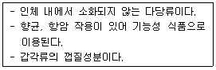
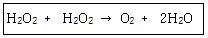

식품기사 (2010-07-25 기출문제)
1과목: 식품위생학
1. 식품공전상의 방법으로 대장균군 최확수(MPN)표를 작성하려고 한다. 시료를 10배수씩 3단계 희석한 검체를 조제하여 실험할 때 각 단계의 시험관 수는 ?
- 1개 또는 2개
- 3개 또는 5개
- 7개 또는 9개
- 10개 또는 20개
(정답률: 81%)

2. 식품공장에서 자연채광을 위하여 필요한 창문의 적합한 면적은?
- 벽면적의 50%
- 바닥면적의 40%
- 벽면적의 70%
- 바닥면적의 15%
(정답률: 66%)
3. 간장에 사용할 수 있는 보존료는?
- 베타-나프톨(β-naphtol)
- 안식향산(benzoic acid)
- 소르빈산(sorbic acid)
- 데히드로초산(dehydro acetic acid)
(정답률: 69%)
4. 사람이 일생동안 섭취하였을 때 현시점에서 알려진 사실에 근거하여 바람직하지 않은 영향이 나타나지 않을 것으로 예상되는 화학물질의 1일 섭취량을 나타낸 것은?
- ADI
- GRAS
- LD50
- LC50
(정답률: 84%)
5. 어떤 첨가물의 LD50의 값이 낮을 경우 그 의미는?
- 독성이 약하다
- 독성이 강하다
- 보존성이 작다
- 보존성이 크다
(정답률: 80%)
6. 경구전염병의 특성과 거리가 먼 것은 ?
- 수인성 전파가 일어나 수 있다.
- 2차 감염이 있을 수 있다.
- 미량의 균으로도 감염될 수 있다.
- 식중독에 비하여 잠복기가 짧다.
(정답률: 83%)
7. 다음 중 가장 잔존성이 큰 염소제는?
- Aldrin
- DDT
- Telodrin
- γ-BHC
(정답률: 87%)
8. 식품 유화제와 가장 거리가 먼 것은?
- monopalmitate
- sodium carboxymethyl cellulose
- sucrose monostearate
- soybean lecithin
(정답률: 60%)
9. 중간수분식품(IMF)에 관한 설명 중 틀린것은?
- 일반적으로 수분활성이 0.60~0.85에 해당하는 식품을 말한다.
- 곰팡이의 발육을 억제하는 데는 큰 효과가 없다.
- 저온을 병용하면 더욱 효과가 좋다.
- 황색 포도상구균의 발육억제에는 비효과적이다.
(정답률: 52%)
10. 중요관리점이 잘 관리되고 있는지를 확인하기 위하여 계획된 항목을 관찰하거나 측정하는 것은 ?
- 모니터링
- 검증
- 예방조치
- 기록유지
(정답률: 94%)
11. 물에 오염될 수 있는 물질이 생물학적인 산화를 받아 주로 무기성 산화물과 가스가 되기 위해 소비되는 산소량을 ppm으로 표시한 것은?
- BOD
- SOD
- SS
- DO
(정답률: 86%)
12. 물에 녹기 쉬운 무색의 가스살균제로 방부력이 강하여 0.1%로서 아포균에 유효하며, 단백질을 변성시키는 작용을 하며 두통, 위통, 구토 등의 중독 증상을 일으키는 물질은?
- 포름알데히드
- 불화수소
- 붕산
- 승홍
(정답률: 76%)
13. 식품첨가물 사용에 있어 바림직하지 않은 것은?
- 식품의 성질, 식품첨가물의 효과, 성질을 잘 연구하여 가장 적합한 첨가물을 선정한다.
- 순도가 높은 것을 사용하여야 한다.
- 식품첨가물은 별도로 잘 정돈하여 보관하되, 각각 알맞은 조건에 유의하여 보관하여야 한다.
- 식품첨가물은 식품학적 안정성이 보장되므로 충분히 사용하여야 한다.
(정답률: 88%)
14. 식품의 총균수 검사를 통하여 알 수 있는 것은?
- 신선도
- 가공전의 원료 오염상태
- 부패도
- 대장균의 존재
(정답률: 60%)
15. 다음 중 HACCP 시스템 적용시 가장 먼저 시행해야하는 단계는 ?
- 위해요소분석
- HACCP팀 구성
- 중요관리점 설정
- 개선조치 설정
(정답률: 78%)
16. 동물성 식품의 변질검사에 해당되는 것은?
- 히스타민 측정
- 산도측정
- 카르보닐가 측정
- 요오드가 측정
(정답률: 55%)
17. 식품첨가물 중 보존료과 관계없는 것은?
- 안식향산
- 치아염소산나트륨
- 소르빈산
- 데히드로초산
(정답률: 77%)
18. HACCP 관리에서 미생물학적 위해분석을 수행할 경우 평가사항과 거리가 먼 것은?
- 위해의 중요도 평가
- 위해의 위험도 평가
- 위해의 원인분석 및 확정
- 위해의 발생 후 사후조치 평가
(정답률: 74%)
19. 다음 중 리케치아에 의한 식중독은 ?
- 성홍열
- 유행성 간염
- 쯔쯔가무시병
- 디프테리아
(정답률: 69%)
20. 기생충과 그의 중간 숙주와의 관계를 나타낸 것 중 연결이 틀린것은?
- 간흡충 - 붕어
- 폐흡충 - 가재
- 유구조충 - 돼지
- 광절열두조충 - 양
(정답률: 76%)
2과목: 식품화학
21. 액체 상태의 유지를 고체 상태로 변환시켜 쇼트닝을 만들거나, 유지의 산화안정성을 높이기 위하여 사용되는 유지의 가공 방법은?
- 경화
- 탈검
- 탈취
- 분별
(정답률: 87%)
22. 다음 중 가장 노화되기 어려운 전분은?
- 옥수수 전분
- 밀 전분
- 찹쌀 전분
- 감자 전분
(정답률: 77%)
23. 평균 분자량이 885인 유지의 비누화값은 얼마인가?
- 90
- 190
- 290
- 390
(정답률: 50%)
24. 고구마 절단시 나오는 흰색 유액의 특수성분은?
- 사포닌(saponin)
- 얄라핀(jalapin)
- 솔라닌(solanine)
- 이눌린(inulin)
(정답률: 78%)
25. 밀가루에 식용탄산나트륨을 넣으면 누렇게 변색되는 이유는?
- 효소적 갈변을 촉진시키기 때문이다.
- 마이야르 반응을 촉진시키기 때문이다.
- 플라본색소가 알칼리에 의해 찰곤형태로 변화되기 때문이다.
- 밀가루 중의 카로티노이드가 활성화되기 때문이다.
(정답률: 52%)
26. 생채에 들어 있는 무기질의 주요한 기능이 아닌 것은?
- 1g 당 9kcal의 열량 생산
- 체내 조직의 pH조절
- 유기화합물과 결합하여 체내성분을 구성
- 효소의 활성에 관여
(정답률: 82%)
27. 다음 식품 중 비뉴톤 유체의 성질을 가장 잘 나타내는 것은?
- 대두유
- 포도당용액
- 팩틴용액
- 소금용액
(정답률: 66%)
28. 달걀을 높은 온도에서 긴 시간 가열하면 난황 주위가 청록색으로 변색되는데 그 이유로 가장 적합한 것은?
- 비타민 C가 산화되어 노른자의 철(Fe)과 결합하기 때문
- 열에 의하여 탄닌이 분해되어 철이 형성되기 때문
- 달걀 흰자의 황화수소(H2S)가 노른자의 철과 결합하여 황화철(FeS)을 생성하기 때문
- 단백질의 구성성분인 질소가 산화되기 때문
(정답률: 87%)
29. 검정콩. 가지, 포도 등에 공통적으로 들어있는 색소는?
- chlorophyll
- carotenoid
- anthoxanthin
- anthocyanin
(정답률: 74%)
30. 냄새성분과 그 특성의 연결이 틀린것은?
- 알데히드류 - 식물의 풋내, 유지 식품의 기름진 풍미 및 산패취
- 에스테르류 - 과일과 꽃의 중요한 향기성분
- 퓨란류 - 구린내, 지린내, 비린내 등의 부패취를 내는 성분
- 피라진류 - 질소를 함유한 화합물로 고기향, 땅콩향, 볶음향 등의 특성을 나타내는 성분
(정답률: 67%)
31. 다음 중 탄소의 수가 4개인 당알코올은?
- 자일리톨
- 만니톨
- 에리스리톨
- 솔비톨
(정답률: 55%)
32. 식품의 맛에 대한 설명으로 옳은 것은?
- 소금용액에 소량의 구연산을 첨가했을 때 짠맛이 증가하는 현상을 맛의 상승이라 한다.
- 식품의 떫은 맛 성분은 주로 chorogenic acid, catechin, shibuol 등에 기인한다.
- 단맛은 향기를 동반하는 경우가 많으며 식품에 청량감을 주고 식욕을 증진시킨다.
- 과실과 채소의 쓴맛 성분은 hesperidin, curcumin, quercetin 이 대표적이다.
(정답률: 36%)
33. 된장을 숙성하면서 된장에 함께 존재하는 단백질 분해효소들에 의하여 구수한 맛을 내는 어떤 성분이 증가하는가?
- aspartic acid
- glutamic acid
- lysine
- histidine
(정답률: 74%)
34. 식품에 외부에서 힘을 가했을 때 식품의 형태가 변형되었다가 다시 가해진 압력을 제거하면 원래의 모습으로 돌아가려는 성질은?
- 점탄성
- 탄성
- 소성.
- 항복치
(정답률: 79%)
35. 식품의 관능평가의 측정요소 중 반응척도가 갖추어야 할 요건이 아닌 것은?
- 의미전달이 명확해야 한다.
- 단순해야 한다.
- 차이를 감지할 수 없어야 한다.
- 관련성이 있어야 한다.
(정답률: 90%)
36. 전통적인 제조법에 의해 식혜의 감미성분은?
- 갈락토오스
- 락토오스
- 만노오스
- 말토오스
(정답률: 73%)
37. 전해질에 의해 응석(또는 응결)을 일으키는 콜로이드는?
- 침수 졸
- 소수 졸
- 침전 겔
- 제로 겔
(정답률: 43%)
38. 교질용액의 특징으로 옳은 것은?
- 오래 방치하면 입자가 중력에 의해 가라앉는다.
- 브라운 운동을 관찰할 수 있다.
- 입자의 직경이 1~10μm이다.
- 일반 현미경으로 입자를 관찰할 수 있다.
(정답률: 64%)
39. 일반적으로 육류의 맛은 단백질 가수분해물인 아미노산에 의해 지미를 나타내고 있는데 이들 아미노산 외에 중요한 또 하나의 맛 성분은 ATP가 분해되어 생성된 것 이다. 이것은 어떤 물질인가?
- 모노소디움 글루타메이트
- 구아닐산
- 이노신산
- 아스파라진산
(정답률: 55%)
40. 사후강직에 대한 설명으로 옳은 것은?
- 도살 직후 얼리면 녹은 이후에 사후강직이 일어나지 않는 다.
- 근육은 도살 직후에는 미오신과 액틴이 단단히 결합하여 액토미오신을 형성한다.
- 미오신에 ATP가 흡착되면 액틴과의 결합이 방해를 받아 액토미오신의 양이 적어진다.
- 포스파타아제가 활성화 되면 액토미오신의 생성이 적어진다.
(정답률: 34%)
3과목: 식품가공학
41. 식용유지의 제조과정에서 "탈색"에 대한 설명으로 틀린것은?
- 원유 중에 카로티노이드, 엽록소 및 기다 색소류를 제거한다.
- 주로 화학적 방법으로 색소류를 열분해하여 제거한다.
- 활성백토, 활성탄소를 사용하여 흡착 제거한다.
- 탈산 과정을 거친 후에 탈색하는 것이 일반적이다.
(정답률: 48%)
42. 식품 포장재 중 기체 비투과성, 방습성 등의 barrier성이 좋으며 열수축성이 커서 햄, 소시지 등의 단위 포장에 주로 사용되는 것은?
- LDPE(Low Density poly Ethylene)
- PP
- PVDC
- CA
(정답률: 70%)
43. 식품의 환경기체조절포장에 사용되는 기체 중 이산화탄소의 특징이 아닌 것은?
- 미생물 성장의 억제
- 지방 및 물에 가용성
- 고농도에서는 제품의 색이나 향미를 변화시키고 과채류에서는 질식을 가져올 수 있음
- 신선육의 밝은 적색을 유지시킴
(정답률: 51%)
44. 유지를 정제한 다음 정제유에 수소를 첨가하면 유지는 어떻게 변하는가?
- 융점이 저하된다.
- 융점이 상승한다.
- 성상이나 융점은 변하지 않는다.
- 이중 결합에 변화가 없다.
(정답률: 78%)
45. 과실과 채소의 가공상 주의점 및 특성에 대한 설명으로 틀린 것은 ?
- 색깔이 가공 중에 변하지 않게 한다.
- 향기 성분은 파괴되지 않고 안정하므로 가열하여도 지장은 없다.
- 비타민의 손실이 적도록 한다.
- 과일 중의 유기산은 금속 화합물을 잘 만들므로 용기의 금속재료에 주의한다.
(정답률: 88%)
46. 과실 채소류의 호흡계수를 구하는 방법은?
- 호흡에 의하여 생성되는 CO2 / 호흡에 의하여 흡수되는 O2
- 호흡에 의하여 생성되는 O2 / 호흡에 의하여 흡수되는 CO2
- 호흡에 의하여 흡수된 O2 량 산출
- 호흡에 의하여 흡수된 CO2 량 산출
(정답률: 69%)
47. 미생물의 내열성을 표시하는 지표로 부적합한 것은 ?
- D값
- F값
- Z값
- 열확산도
(정답률: 64%)
48. 유지 채취 시 전처리 방법이 아닌 것은 ?
- 정선
- 탈각
- 파쇄
- 추출
(정답률: 72%)
49. 과일 쨈의 가공 시 농축공정 중 농축률이 높아짐에 따라 온도가 고온으로 상승하는데 고온으로 장시간 존재할 때 나타나는 변화가 아닌 것은?
- 방향성분이 휘발하여 이취를 낸다.
- 색소의 분해와 갈변반응을 일으켜 색의 저하를 가져온다.
- 설탕의 전화가 진행되어 엿 냄새가 감소한다.
- 펙틴의 분해에 의해 젤리화 하는 힘이 감소된다.
(정답률: 80%)
50. 식품의 포장재료로 사용되는 플라스틱의 특징에 대한 설명으로 틀린 것은?
- HDPE(High density polyethylene) : 내충격성을 향상시킨 내열성의 소재이다.
- PP(polyethylene) : 투명성, 내유성, 내약품성, 내열성이 좋다.
- PC(polycarbonate) : 투명성, 내열성, 가스차단성이 좋다.
- PVC(polyvinyl chloride) : seal성, 열수축성, 가스차단성이 좋다.
(정답률: 48%)
51. 멸치젓 제조시 소금으로 절여 발효할 때 나타나는 현상이 아닌 것은 ?
- 과산화물가가 증가한다.
- 가용성 질소가 증가한다.
- 맛이 좋아진다.
- pH가 증가한다.
(정답률: 54%)
52. 어떤 공정에서 F121=1min 이라고 한다. 이 공정을 111℃에서 실시하면 몇 분간 살균하여야 하는가? (단, z=10℃으로 한다. )
- 10분
- 18분
- 100분
- 118분
(정답률: 50%)
53. 맥아로 물엿을 만들 때 당화온도가 50℃ 정도로 낮아질 경우 어떤 현상이 나타날 수 있는 가?
- 고온성 젖산균이 번식하여 시어진다.
- 부패균이 번식하여 쓴맛이 난다.
- 쌀알갱이가 완전히 풀어진다.
- 당화효소의 활성이 없어진다.
(정답률: 65%)
54. CA저장 설비 장치가 아닌 것은?
- 냉장장치 및 기밀장치
- O2 흡수장치
- 인공조절 가스 발생기
- 기습장치
(정답률: 38%)
55. 보리의 도정방식이 아닌 것은?
- 혼수도정
- 무수도정
- 할맥도정
- 건식도정
(정답률: 49%)
56. 동결방법의 특징에 대한 설명으로 틀린 것은?
- 공기동결법(air freezing) : 동결이 완만히 진행되나 한 번에 대량처리가 가능하다.
- 접촉동결법(contact freezing) : 동결속도가 빠르지만 동결장치면적이 크다.
- 침지식동결법(immersion freezing) : 급속동결 방법으로 brine이 식품 내에 침입하므로 미리 포장한다.
- 액체질소동결법(liquid nitrogen freezing) : 급속동결로 품질향상에 좋으나, 경비가 과다하다.
(정답률: 43%)
57. 습량기준으로 부분함량이 85%인 경우 건량기준의 수분함량으로 전환한 것은?
- 567%
- 400%
- 233%
- 100%
(정답률: 45%)
58. 아래 설명에 해당하는 성분은 ?

- 섬유소
- 펙틴
- 한천
- 키틴
(정답률: 90%)
59. 다음 중 수산발효식품이 아닌 것은?
- 젓갈
- 어간장
- 어묵
- 가자미식해
(정답률: 88%)
60. 유당분해효소결핍증에 직접적으로 관여하는 효소는?
- 락토페록시다제
- 리소자임
- 락타아제
- 락테이드 디하이드로지나제
(정답률: 83%)
4과목: 식품미생물학
61. 단시간 내에 특정 DNA 부위를 기하급수적으로 증폭시키는 중합효소반응의 반복되는 단계를 바르게 나열한 것은?
- DNA 이중나선의 변성 → RNA합성 → DNA합성
- RNA합성 → DNA 이중나선의 변성 → DNA합성
- DNA이중나선의 변성 →프라이머 결합 → DNA합성
- 프라이머 결합 → DNA이중나선의 변성→ DNA합성
(정답률: 66%)
62. 원형질체 융합에 의한 유전자 재조합에 대한 설명으로 틀린 것은?
- 원형질체 융합은 세포의 막융합을 유도하여 세포간 융합이 일어난다.
- 이종간 또는 이속간의 유전자 교환은 원형질체 융합에 사용한다.
- 세포벽이 없는 동물체세포는 별도 처리 없이 원형질체 융합에 사용한다.
- 미생물 세포의 원형질체를 만들 때는 반드시 삼투압안정제를 첨가한다.
(정답률: 31%)
63. 아래 시약 중 그람염색에서 가장 먼저 사용하는 시약은？
- 알코올
- 크리스탈 바이올렛
- 사프라닌
- 그람 요오드
(정답률: 75%)
64. 세균에서 돌연변이를 유발하는 방법으로 적합하지 않는 것은?
- 자외선 조사
- 페니실린 여과
- NTG처리
- EMS처리
(정답률: 60%)
65. 곰팡이의 작용과 거리가 먼 것은?
- 치즈의 숙성
- 페니실린 제조
- 황변미 생성
- 식초의 양조
(정답률: 79%)
66. DNA를 매개체로 하여 옮기는 유전적 재조합 현상은?(오류 신고가 접수된 문제입니다. 반드시 정답과 해설을 확인하시기 바랍니다.)
- 형질전환
- 세포융합
- 형질도입
- 접합
(정답률: 51%)
67. 그람양성 세균의 세포벽이 음성의 극성을 갖는데 관여하는 물질은?
- 펩티도글리칸
- 포린
- 지질 A
- 테이코산
(정답률: 55%)
68. 이형발효젖산균이란?
- 당질에서 젖산만을 생성하는 것
- 당질에서 젖산과 탄산가스를 생성하는 것
- 당질에서 젖산과 CO2,에탄올과 함께 초산 등을 부산물로 생성하는 것
- 당질에서 젖산과 탄산가스, 수소를 부산물로 생성하는 것
(정답률: 71%)
69. 식품 저장 중 발생하는 독소인 aflatoxin을 생산하는 균은?
- Aspergillus oryzae
- Aspergillus kawachii
- Aspergillus niger
- Aspergillus flavus
(정답률: 76%)
70. 독립영양균과 종속영양균에 대한 설명 중 틀린 것은?
- 독립영양균은 탄소원으로 이산화탄소를 이용하지만 종속영양균은 유기화합물을 필요로 한다.
- 독립영양균은 광합성 독립영양균과 화학합성 독립영양균으로 나뉘어진다.
- 종속영양균에는 생물에 기생하는 활물기생균과 유기물에만 생육하는 사물기생균이 있다.
- 미생물이 영양분을 분해하여 에너지를 얻는 화학변화과정의 차이에서 구분된다.
(정답률: 43%)
71. 세포융합의 실험순서로 옳은 것은?
- 제조합체선택 및 분리→protoplast의 융합→융합체의 재생→세포의 protoplast화
- protoplast의 융합→세포의 protoplast화→융합체의 재생→재조합체 선택 및 분리
- 세포의 protoplast화→protoplast의 융합→융합체의 재생→재조합체 선택 및 분리
- 융합체의 재생→재조합체 선택 및 분리→protoplast의 융합→세포의 protoplast화
(정답률: 79%)
72. 통조림의 개관시 살균 소독을 위해 덮개를 닦을때 사용하는 재료로 가장 적합한 것은?
- 0.1%승홍수
- 5% 크레졸용액
- 70% 에탄올
- 1%펠링용액
(정답률: 71%)
73. 공여세포로부터 유리된 DNA가 직접 수용세포내로 들어가 일어나는 DNA 재 조합방법은?
- 형질전환
- 형질도입
- 접합
- 세포융합
(정답률: 40%)
74. 일반적으로 할로겐 원소 등의 살균제에 대하여 가장 강한 내성을 가지고 있는 것은?
- 바이러스
- 그람 음성균
- 그람양성세균
- 포자
(정답률: 80%)
75. 진핵세포의 특징에 대한 설명 중 틀린 것은?
- 염색체는 핵막에 의해 세포질과 격리되어 있다.
- 미토콘드리아 마이크로솜, 골지체와 같은 세포소기관이 존재한다.
- 스테롤 성분과 세포골격을 가지고 있다.
- 염색체의 구조에 히스톤과 인을 갖고 있지 않다.
(정답률: 80%)
76. 에너지 포화지방산 등 생장에 필요한 물질을 합성하기위해 산소를 꼭 필요로 하여 산소가 없으면 자라지 못하며 최종 전자수용체로서 산소를 이용하는 균은?
- 절대호기성균
- 미호기성균
- 통성혐기성균
- 절대혐기성균
(정답률: 85%)
77. 단백질의 생합성에 대한 설명 중 틀린 것은?
- DNA의 염기 배열순에 따라 단백질의 아미노산 배열 순위가 결정된다.
- 단백질 생합성에서 RNA는 r-RNA→t-RNA→m-RNA순으로 관여한다.
- RNA에는 H3PO4, D-ribose가 있다.
- RNA에는 adenine, guanine, cytosine, uracil이 있다.
(정답률: 71%)
78. 식품 살균과정에서 다양한 미생물저해기술을 순차적이나 병행적으로 처리하여 식품의 변질을 최소화 하면서 미생물에 대한 살균력을 높이는 기술은?
- 나노기술
- 허들기술
- 마라톤기술
- 바이오기술
(정답률: 82%)
79. 다음 중 산막효모가 아닌 것은?
- Hansenula 속
- Debaryomyces 속
- Saccharomyces 속
- Pichia 속
(정답률: 57%)
80. 대장균 군에 대한 설명으로 틀린 것은?
- 장내에 서식하며 그람음성, 통성혐기성균이다.
- 유당을 분해한다.
- 대장균도 속해 있으며 대부분이 매우 유해한 식중독균이다.
- 식품위생 지표로 사용된다.
(정답률: 78%)
5과목: 생화학 및 발효학
81. 인지질의 생합성에 관여하는 요소 중 불필요한 것은?
- choline
- kinase, transferase, ATP 및 CTP
- phospholipase A, B, ATP 및 CTP
- 1, 2 - diglyceride
(정답률: 60%)
82. 세대시간이 15분인 세균1개를 1시간 배양 했을때의 균수는?
- 4
- 8
- 16
- 40
(정답률: 82%)
83. 무증자 전분(uncooked starch)으로 발효탱크에서 주정발효를 수행하고자 할 때 기계적 교반에너지와 관련하여 가장 중요한 공정은?
- 전분질의 완전액화의 완료
- 전분질의 당화 완료
- 알코올의 회수
- 발효조의 설계
(정답률: 36%)
84. 핵산관련 물질이 정미성을 갖기 위한 구조에 대한 설명으로 틀린 것은?
- purine의 염과 ribose가 있어야 한다.
- ribose 5'위치에 인산기가 있어야 한다.
- pyrimidine계에 정미성이 존재한다.
- mononucleotide 이어야 한다.
(정답률: 57%)
85. 고정화효소의 의미로 옳은 것은?
- 물리적 방법으로 고정한 효소
- 화학적 방법으로 고정한 효소
- 촉매물질과 결합한 효소
- 효소활성을 유지하면서 담체와 결합한 효소
(정답률: 76%)
86. DNA가 반보존적으로 유전된다는 meselson 실험에서 2세대 후 14N과 15N의 비율은?
- 1 : 1
- 1 : 2
- 1 : 3
- 2 : 1
(정답률: 59%)
87. 근육조직에 저장된 에너지 형태는?
- phosphoenolpyruvate
- creatine phosphate
- 1, 3 - diphosphoglycerate
- ATP
(정답률: 52%)
88. 효모균체 성분 중 가장 많이 들어있는 비타민은?
- thiamine
- riboflavin
- nicotinic acid
- folic acid
(정답률: 60%)
89. 다음 중 미생물 발효로 생산하는 아미노산이 아닌 것은?
- L-cystine
- L-arginine
- L-valine
- L-tryptophan
(정답률: 56%)
90. 당밀로부터 주정 제조시 당밀 전처리에 대한 설명으로 틀린 것은?
- 100℃에서 30분간 살균한다.
- 발효조정제로 황산암모늄 3%, 혹은 쌀겨 10%를 첨가한다.
- 발효조정제로 증류폐액(stillage)을 사용시 20%를 첨가한다.
- 발효에 사용되는 농도는 희석하여 Brix20°(녹말로 10~12%)로 한다.
(정답률: 38%)
91. 산업적으로 중요한 발효 산물과 거리가 먼 것은?
- 미생물 균체
- 합성항생제
- 변형 화합물
- 미생물 대사산물
(정답률: 70%)
92. 폐수 처리시에 메탄발효에 의하여 유기물을 처리하는 방법은?
- 활성오니법
- 살수여상법
- 혐기적 처리법
- 호기적 처리법
(정답률: 79%)
93. 발효방법과 미생물의 연결이 틀린것은?
- lastate 발효 - Streptococcus lactis
- citrate 발효 - Aspergillus niger
- α-catoglutarate 발효 - Pseudomononas fluorescence
- itaconate 발효 - Bacillus subtilis
(정답률: 53%)
94. 미생물 균체를 이용한 정미성 핵산 물질을 얻는데 가장 유리한 미생물은?
- 효모
- 세균
- 방선균
- 곰팡이
(정답률: 60%)
95. 다음 반응에 관여하는 효소는?

- hydroxylase
- fumarase
- lactate racemase
- catalase
(정답률: 56%)
96. 핵산을 구성하고 있는 염기들은 일정 파장에서 흡수스펙트럼을 갖기 때문에 핵단백질, 핵산 등의 정량에 이용된다. 이들의 분석에 적합한 파장은?
- 260nm
- 280nm
- 540nm
- 660nm
(정답률: 60%)
97. t-RNA는 단백질의 합성에 중요한 역할을 하는데 주로 어느 물질의 운반역할을 하는가?
- 당질
- 효소
- 핵산
- 아미노산
(정답률: 70%)
98. 다음중 제조방법이 병행복발효주에 속하는 것은?
- 맥주
- 약주
- 사과주
- 위스키
(정답률: 63%)
99. 다음 미생물 중 비타민 B2의 생산균주는?
- Pseudomonas denitrificans
- Propionibacterium freudenreichii
- Ashbya gossypii
- Blakeslea trispora
(정답률: 66%)
100. 재조합 DNA에 사용되는 제한효소인 endonuclease가 아닌 것은?
- EcoR Ⅰ
- Hind Ⅱ
- Hind Ⅲ
- SalP Ⅳ
(정답률: 76%)
첫 번째 단계에서는 원래 시료를 10배수로 희석한 시료를 이용하여 실험을 진행한다. 이때, 시료 1mL을 9mL의 적정액으로 희석하면 총 10mL의 시료가 된다. 따라서, 이 시료를 이용하여 실험을 진행할 때는 시험관 10개를 사용하게 된다.
두 번째 단계에서는 첫 번째 단계에서 양성이 나온 시험관 중에서 1mL을 9mL의 적정액으로 희석하여 실험을 진행한다. 이때, 첫 번째 단계에서 양성이 나온 시험관의 수가 얼마나 되느냐에 따라서 시험관의 수가 결정된다. 예를 들어, 첫 번째 단계에서 양성이 나온 시험관이 3개라면, 이를 각각 10배수로 희석하여 시험관 3개를 사용하여 실험을 진행하면 된다.
세 번째 단계에서도 마찬가지로 두 번째 단계에서 양성이 나온 시험관 중에서 1mL을 9mL의 적정액으로 희석하여 실험을 진행한다. 이때도 두 번째 단계에서 양성이 나온 시험관의 수에 따라서 시험관의 수가 결정된다.
따라서, 정답은 "3개 또는 5개"이다. 첫 번째 단계에서는 시험관 10개를 사용하고, 두 번째 단계에서는 첫 번째 단계에서 양성이 나온 시험관의 수에 따라서 3개 또는 5개를 사용하고, 세 번째 단계에서도 두 번째 단계에서 양성이 나온 시험관의 수에 따라서 3개 또는 5개를 사용하게 된다.